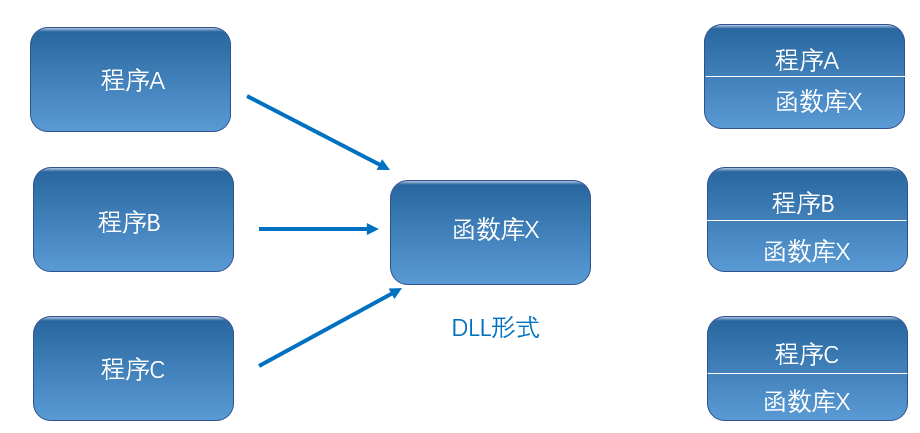

DLL、LabVIEW、.NET、Teststand之间的相互调用
--Share by 杨寿堂内容
- 背景
- DLL是什么鬼？
- 在LabVIEW中调用DLL
- 在Teststand中调用DLL
- 如何制作DLL
- 练习 Q&A
使用DLL的应用：
- 无锡607所串口卡调试
- 富士康iphone耳机测试产线更换NI板卡
- 615所IDU项目中AFDX板卡驱动
- 615所AFDX交换机项目中615A加载
- 调用第三方外部设备
{DLL是什么鬼？}
DLL和exe之间的关系
使用LabVIEW如何调用C编写DLL
牛刀小试
C代码
add.c
#include "math.h"
__declspec(dllexport) int add(int a, int b){
return a + b;
}
add.h
#pragma once;
__declspec(dllexport) int add(int a, int b);
动手练习，在labview中调用ADD函数.
常用的参数类型
- 整形
- 字符串
- 数组
- 指针
GetMyValue.c
#include"math.h"
__declspec(dllexport) void GetMyValue(int *len,int *num,char *str)
{
char strNum[4];
char myString[512];
int length = 20;
*len = length;
for (int i = 0; i < length; i++)
{
num[i] = i;
}
memset(myString, '\0', 512);
itoa(length, strNum, 10);
strcat(myString, "this array length is ");
strcat(myString, strNum);
strcpy(str, myString);
}
GetMyValue.h
#pragma once;
__declspec(dllexport) int getValue(int *len,int*num, char *str2);
使用LabVIEW调用GetMyValue函数.
目标
- 使用库节点函数指针
- 使用指针返回数组
- 使用指针返回字符串
使用LabVIEW如何调用.NET生成的DLL
using System;
using System.Collections.Generic;
using System.Linq;
using System.Text;
namespace demo2
{
public class Class1
{
public int add(int a,int b)
{
return a + b;
}
public void GetValue(ref int length,ref int []numArray,ref string str)
{
Random ran = new Random();
int ranNum = ran.Next(0, 20);
length = ranNum;
for (int i = 0; i < ranNum; i++)
{
numArray[i] = i;
}
str = "this array length is " + ranNum.ToString();
}
}
}
练习在LabVIEW中调用.NET生成的DLL
目标
- 使用构造函数
- 访问实例的方法
在Teststand中调用C 生成的DLL
在Teststand中调用.NET 生成的DLL
那么，如何生成DLL呢？
如何用C代码生成DLL?
演示
如何用.NET生成DLL?
演示
Q&A